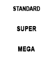
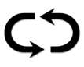
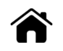

Eski Mısır medeniyeti temalı LUCK OF RA Video Slot oyununa hoş geldiniz. Oyunda, farklı oyun modları, makara senkronizasyonu, ücretiz spin'ler, gamble oyunu ve daha birçok heyecan verici fonksiyon mevcuttur.
OYUN HAKKINDA
LUCK OF RA 10 sabit payline ile oynanır. Oyunda, payline üzerinde en soldaki konumdan başlayarak bitişik makaralarda üç veya daha fazla sıralanması durumunda ödeme yapan on standart sembol bulunur.
OYUN MODLARI : Oyuncu, standart, süper veya mega oyun modlari arasindan seçİm yapabi̇li̇r.
Standart oyun modu: standart spin düğmesi̇ni̇ kullanin. Bu modu seçerek, normal modda oynarsiniz.
Süper oyun modu: güçlendi̇ri̇lmi̇ş spin düğmesi̇ni̇ kullanin. Oku döndürmek ve her spin (dönüş) İle bi̇rli̇kte makara senkroni̇zasyonunu akti̇f duruma geti̇rmek İçİn bu modu seçİn. Okun yeşİl alana gelmesi̇, makaralari mega semboller akti̇f olarak döndürür. Okun kirmizi alana gelmesi̇, bahsi̇n kaybedi̇lmesi̇ne neden olur.
Mega oyun modu: Güçlendi̇ri̇lmi̇ş spin düğmesi̇ni̇ kullanin. Oku döndürmek ve ücretsi̇z spin'l doğrudan gi̇rmek İçİn bu modu kullanin. Okun yeşİl alana gelmesi̇, makaralari, ücretsi̇z spin'lere doğrudan eri̇şİm sağlayan, tam görünümde mega scatter sembolü akti̇f olarak döndürür. Okun kirmizi alana gelmesi̇, bahsi̇n kaybedi̇lmesi̇ne neden olur.
Bedava Döndürmeler
Tam görüntülenen li̇ste sembolü, 8 ücretsi̇z spin'İ teti̇kler. Ücretsi̇z spin bonusundan önce, ücretsi̇z spin oyununda kullanilacak 2 farkli sembol seçİli̇r. Seçİlen semboller, özel açilan semboller olarak hareket ederler. 2 veya 3 veya daha fazla makara üzeri̇nde özel sembolleri̇n mevcut olmasi durumunda, standart kazandiran kombi̇nasyonlar İçİn kazançlari taki̇ben, özel sembol/semboller, üzeri̇nde bulunduklari makaralardaki̇ tüm di̇key pozi̇syonlari kaplamak üzere açilirlar. Daha düşük ödeme sembolü İlk olarak devreye gi̇rer ve onun ödenmesi̇ni̇ taki̇ben yüksek ödeme sembolü devreye gi̇rer. Ücretsi̇z spin'ler sirasinda, senkroni̇ze makaralar, özel açilan sembolleri̇ açarak, her spin üzeri̇nde etki̇li̇ olurlar. Ücretsi̇z spin'ler sirasinda, 3x3 scatter sembolünün tam olarak görüntülenmesi̇ durumunda ek ücretsi̇z spin'ler kazanilabi̇li̇r. Ayni açilir semboller İle, 8 ek ücretsi̇z spin kazanilir.
BONUS SATIN ALIMI
Bu özelli̇k, "bonus satin alimi" ölçer i̇çi̇nde görüntülenen ödül olarak satin alinabi̇li̇r. Mevcut baki̇ye, bonu satin alimi ödülü i̇çi̇n yeterli̇ olduğunda, baki̇ye otomati̇k olarak sifira i̇necek ve özelli̇k teti̇klenecekti̇r.
OYUN
Oyun, oyuncunun ana oyun İçİnde ancak gi̇zli̇ bi̇r kartin rengi̇ni̇n veya destesi̇ni̇n doğru tahmi̇n etmesi̇yle toplam kazancini katlamasini sağlayan opsi̇yonel gamble oyunu fonksi̇yonuna sahi̇pti̇r. Doğru renk x2 ve doğru siralanma İse x4 ödeme sağlar. Gamble oyunu, 250 000 avro veya başka para bi̇ri̇mi̇ olarak dengi̇ tutarda bi̇r maks. Alt sinira dek veya bi̇r di̇zi̇nde 5 defaya dek oynanabi̇li̇r.
NASIL OYNANIR
-
Stake/jeton adını seçin.
-
Yeni bir oyun çevrimini başlatmak için, Spin düğmesine tıklayın (masaüstünden) veya dokunun (cep telefonundan).
OYUN DÜĞMELERİ
|
Simge |
Masaüstü |
Cep telefonu |
Mobil |
|
|
DÖNDÜR | DÖNDÜR | Bir tekli çevrim başlatır |
| Maks bahis | (Ayarlar menüsü ile birlikte, Stake Seçim ekranını içerir) | Bahis konfigürasyonunu, maksimum stake level'ine ayarlar. Başlamak için, spin düğmesine basın. | |
|
|
OTOMATİK OYUN | Autoplay için Spin'i tutar (veya ayarlar menüsünde bulunur) | Aynı anda birden çok döngü başlatmak için oyundaki tüm Otomatik Oynatma Seçeneklerini gösteren menü ekranını getirir. |
|
|
Stake Seçimi | Stake Seçimi (veya ayarlar menüsündedir) | Oyuncunun bahis seviyelerini seçmesi için Stake Seçeneklerini getirir. |
|
|
Ayarlar Menüsü | Ayarlar Menüsü | Aşağıdakileri sunan ayrı bir ayar ekranı açar: Ana sayfa, Ses, Oyun ayarları, Geçmiş, Bilgi/Yardım ve Kasa (istendiğinde) |
| Ses | (Ana ayarlar, ayarlar menüsünde mevcuttur) | Masaüstü - Oyuncunun müzikleri veya ses efektlerini bağımsız olarak açabilmesi için, audio ayarlar menüsünü açar. | |
|
|
Turbo Play | (Oyun ayarları menüsünde mevcut) | Makaraların hızını Quickspin olarak değiştirir |
| OYUN | OYUN | Temel oyun kazançlarından sonra gamble özelliği başlatılır. | |
|
|
TOPLA | TOPLA | Kazanılan tutarı tahsil edin ve Gamble fonksiyonunu atlayın. |
|
 |
OYUN MODLARI | OYUN MODLARI | Oyuncunun bahiste bulunmak istediği oyun modunu seçin. |
AYAR DÜĞMELERİ
| Sembol | Simge | Davranış |
| Oyun Geçmişi |
|
Oyuncuya, bu oyun oturumunda oynanan oyun çevrimlerinin bir listesini gösterir. |
| Bahis Ayarları |
|
Buradan itibaren, oyuncu oyun için stake değerini belirleyebilir veya mevcut diğer seçeneklerden birini seçebilir. |
| Autoplay'ler |  | Kayıp Sınırları dahil olmak üzere (uygulanabiliyorsa) çeşitli standart ve genişletilmiş Otomatik Oyun seçeneklerinin seçilebileceği ve başlatılabildiği sayfayı başlatır |
| Oyun Ayarları |
|
Mevcut çeşitli genel ayarlar seçeneklerini gösterir (örneğin, oyuncular için oturum sırasında hangi seslerin çalınmasını istediklerini belirlemek üzere Oyuncu tarafından seçilebilen Ses ayarları). |
| Karşılama sayfası |  | Mevcut oyun oturumundan çıkar (son komuttan sonra) ve ekranı Operatörlerin Ana Oyun Menüsü sayfalarına geri döndürür. |
DİĞER OYUN BİLGİSİ
-
Farklı payline'lar üzerinden kazanılan kazançlar toplanır ve oyuncuya ödenir.
-
Jeton Değeri - Geçerli ayarların teorik stake ödülünü görüntüler. Tüm kazançlar, bir Para Ödülü kazancına dönüştürülmek üzere jeton değeriyle çarpılması gereken para cinsinden gösterilirler. Nakit / Jeton- Hesap bakiyesini, oyuncunun seçimine bagli olarak Nakit (parasal deger) veya Jeton (kredi sayisi) olarak görüntüler. Standart görüntüleme, Cash şeklindedir. Paranın Jetona ve Jetonun Paraya çevrilmesi, en yakın özgün değere tamamlamak için 2 ondalık değerle gerçekleştirilir. Bununla birlikte, Jeton dönüşümleri daima tam sayıyla görüntülenecektir.
-
Bahis - Mevcut ayarın bahis değerini gösterir. Bahis boyu, çarpan ile 1 jeton çarpımıdır.
-
TOPLAM BAHİS, 40 JETON OLAN ÇOKLU OYUNCU BAHSİ İLE ÇARPILAN JETON DEĞERİDİR.
-
Maks. Bahis (YALNIZCA Masaüstü) - Jeton değerini mevcut en geniş değere ayarlayın.
-
Spin Düğmesi - Oyunu başlatır Makaralar döndürüldüğünde, spin düğmesi Turbo Durdurma Düğmesine dönüşür. Makaraları derhal durdurmak için, Turbo Stop Düğmesine basın.
-
Autoplay – Her defasında spin düğmesine basmak gerekmeksizin, oynanacak oyunu seçebilirsiniz. Autoplay düğmesine basarak, auto play uygulanacak tur sayısını seçin (veya Autoplay Menüsünü açmak için Spin Düğmesini aşağı çekerek (cep telefonundan)). Uygulanablir olduğunda, Oyun Ayarları içinde autoplay durdurmak için, ek koşulları seçebilirsiniz. Bazı oyun müşteri sürümlerinde kayıp limiti, autoplay oturumunuz sırasında belirlenen limitin üzerinde kaybedildiğinde uyarır. Auroplay'i manuel olarak durdurmak için, Stop Autoplay düğmesine basın.
-
Kazanç - Mevcut veya son kazanç ödemesi için kazancı gösterir.
-
Nakit / Jeton- Hesap bakiyesini, oyuncunun seçimine bagli olarak Nakit (parasal deger) veya Jeton (kredi sayisi) olarak görüntüler. Standart görüntüleme, Cash şeklindedir.
-
Paranın Jetona ve Jetonun Paraya çevrilmesi, en yakın özgün değere tamamlamak için 2 ondalık değerle gerçekleştirilir. Bununla birlikte, Jeton dönüşümleri daima tam sayıyla görüntülenecektir.
OYUNCUYA GERİ DÖN
-
Teorik olarak oyuncuya geri dönen, %96.01.
EK BİLGİ
-
Kazanan kombinasyonların her biri, herhangi bir konumda ortaya çıkabilecek dağılım kombinasyonları hariç, her biri Makara 1'den başlayarak, payline üzerinde soldan sağa ödenir.
-
Özellikler dahilinde kazanılan kazançlar, kombinasyonlara ek olarak ödenir.
-
Oyun donanımının / yazılımın arızalanması durumunda, tüm etkilenen bahisler ve ödemeler geçersiz sayılır ve tüm etkilenen bahisler iade edilir.
-
Oyundaki üst kazanç limiti, eşdeğer 250 000 €'dur.